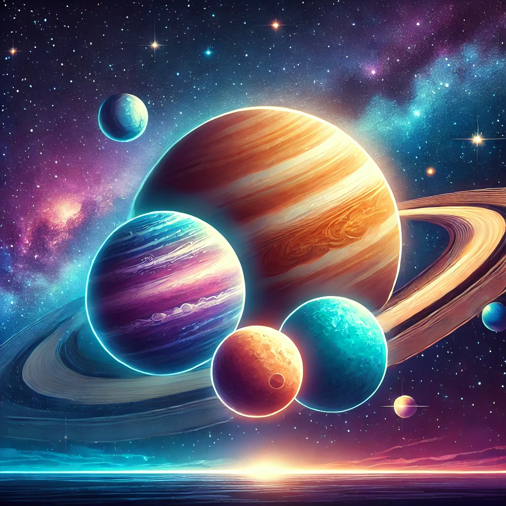

Social
Challenges on other planets & Moon
🌑 Challenges on the Moon
Lack of Atmosphere🌌
The Moon has no atmosphere to protect us from space radiation or harmful solar rays.
This means we would need special shielding (like domes or underground bases) to keep ourselves safe. 🛡️
Extreme Temperatures 🌡️
The Moon has extreme temperature changes
Daytime: Can get as hot as 127°C (260°F) ☀️.
Nighttime: Can drop as cold as -173°C (-280°F) 🌙.
Keeping a stable temperature inside habitats would be a major challenge. ❄️🔥
Low Gravity 🏃♂️
The Moon’s gravity is about 1/6th of Earth’s.
This could cause health problems like muscle and bone loss over time. 💪
Our bodies aren’t built for low gravity, so we would need to exercise regularly to stay strong. 🏋️♀️
🪐 Challenges on Other Planets
Mercury
No Atmosphere:No protection from the Sun’s radiation.
Extreme Temperatures:Day: 430°C (800°F), Night: -180°C (-290°F).
High Radiation:Dangerous radiation from the Sun.
Venus
Thick, Toxic Atmosphere:Full of carbon dioxide, with clouds of sulfuric acid.
Extreme Heat:470°C (880°F)—hotter than Mercury!
Crushing Pressure:The atmosphere pressure is 90 times stronger than Earth’s.
Mars
Thin Atmosphere:Almost no oxygen.
Cold Temperatures:Around -60°C (-80°F).
Radiation Exposure:No magnetic field or thick atmosphere to protect from solar radiation.
Low Gravity:Could cause health issues over time.
Jupiter
No Solid Surface:It’s a gas giant, so we can’t land on it.
Strong Gravity:2.5 times stronger than Earth’s.
Radiation:Very high radiation near its moons and belts.
Saturn 🪐
No Solid Surface:Like Jupiter, it’s mostly gas. 🌬️
Extreme Cold:Around -180°C (-290°F) ❄️.
Low Gravity:Could be hard to stay grounded, even if we found a way to land.🌑
Uranus 🛸
Extreme Cold:Around -224°C (-371°F), the coldest planet in the solar system. 🥶
No Solid Surface:It’s a gas giant. 🌫️
Low Gravity:Gravity is weaker than Earth’s. ⚖️
Neptune 🌊
Extreme Cold:Around -218°C (-360°F). 🧊
No Solid Surface:Like the others, Neptune is a gas giant. 🌪️
High Winds:Winds up to 2,100 km/h (1,300 mph). 💨
